白馬五竜スキー場・白馬八方尾根スキー場
| 日付 | 2021年2月10日（水） - 2021年2月13日（土） |
|---|---|
| メンバー | 家族（妻、長女・9歳、長男・7歳） |
| アクセス | 車 |
3日目
今朝も氷点下。車の窓が凍り付いている。
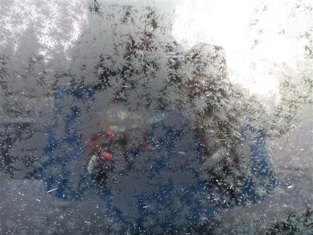
本日は白馬八方尾根スキー場に行ってみる。
チケット売り場は長い行列。あまり考えずにゴンドラ乗り場に来てしまったが、
別の駐車場、チケット売り場に行くべきだった。事前の調査不足だ。
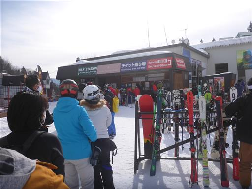
小さな斜面で子供たちが遊んでいる。
息子も喜ぶかと思ったが、もう雪の滑り台では喜ばないようだ…
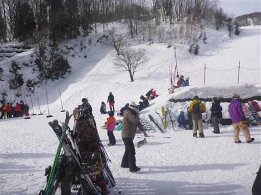
ゴンドラからリフトに乗り継ぎ、スキー場の一番高い場所を目指す。
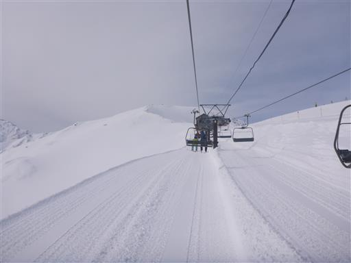
スキー場の最高地点に到着。ここから八方尾根を登って行く登山者の姿が点々と見える。
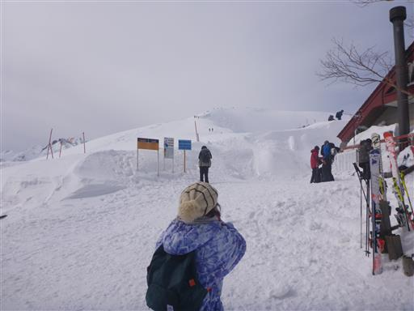
ここからは絶景が広がる。
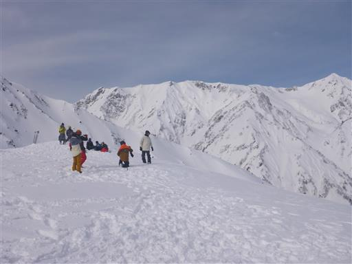
真白な白馬三山。
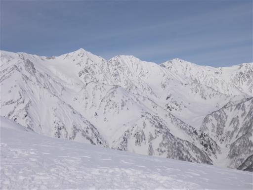
高妻山や頚城三山など北信の山々。
晴れにくい地域だと思っていたが、ここまできれいに晴れるのはラッキーだ。
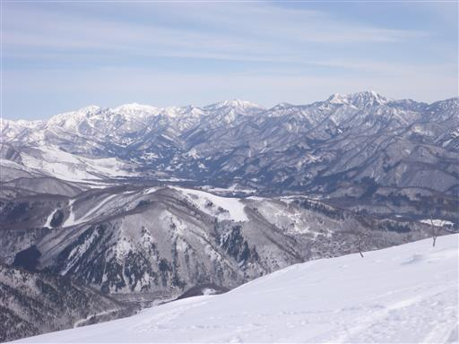
この辺りは雪質が良いが、傾斜がきつく難易度が高い。
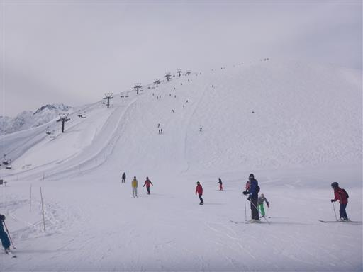
名木山ゲレンデで昼食。屋外でハンバーガーを食べる。
なかなかおいしいハンバーガーだった。
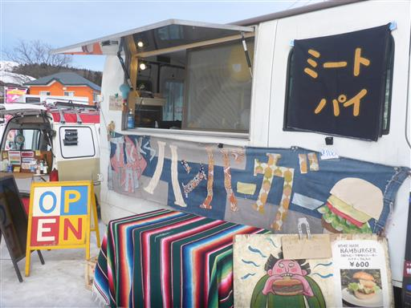
昼食後、息子は雪玉を作って遊び出す。
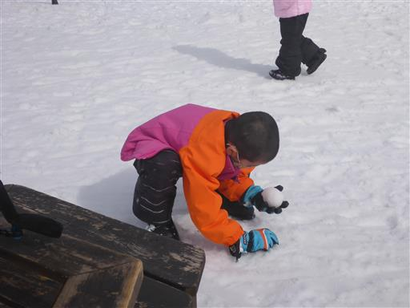
午後からも滑走。多くの人が滑って斜面にだんだんと瘤ができてきて、上手く滑れずこけまくる。
急斜面で板が外れると履くのが大変で、だいぶ時間を浪費する。
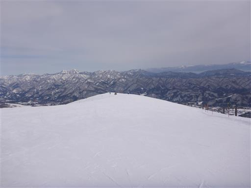
息子は果敢に瘤コースに挑戦。ボーゲンではあるが、2回転んだだけで無事下りてきた。
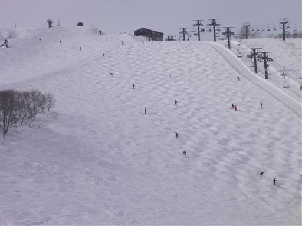
八方尾根のおむすびコース。とんでもない高難易度に見える。
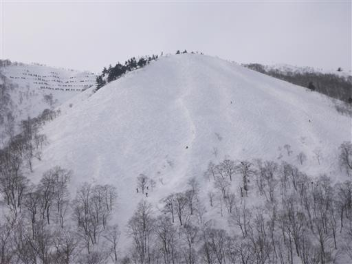
日が傾いてきた。奥に鹿島槍ヶ岳と五竜岳が見える。
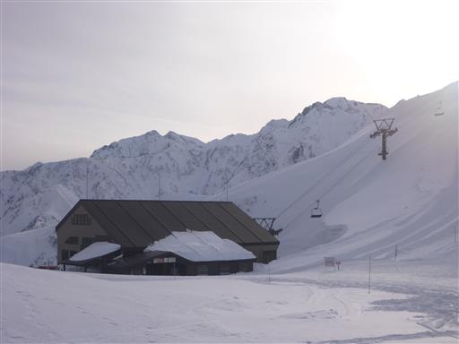
最後の滑走を終える。3泊4日旅行だが、スキーは本日でお終いだ。
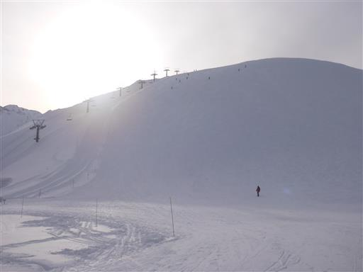